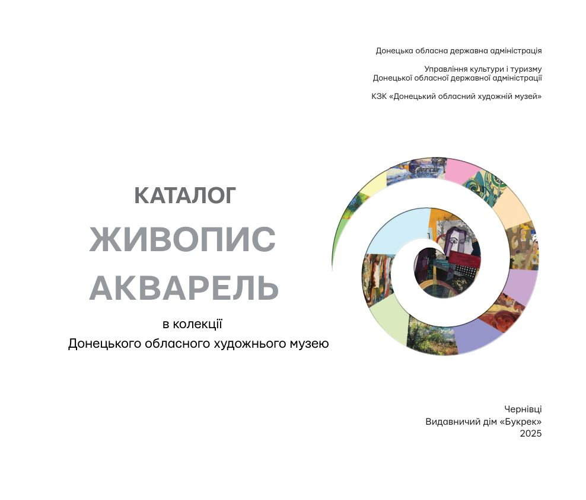

Живопис. Акварель
Каталог творів із колекції музею · Чернівці, 2025
Завантаження…

Перегортайте стрілками або клавішами ← →. Кнопка «Збільшити» відкриває сторінку для детального перегляду.
Каталог творів із колекції музею · Чернівці, 2025

Перегортайте стрілками або клавішами ← →. Кнопка «Збільшити» відкриває сторінку для детального перегляду.